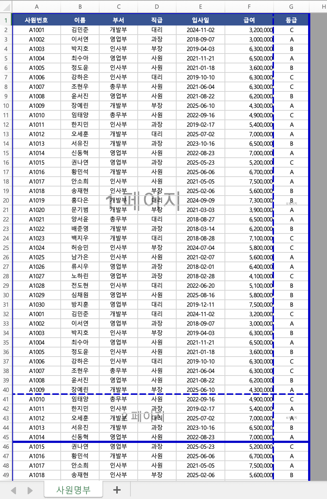
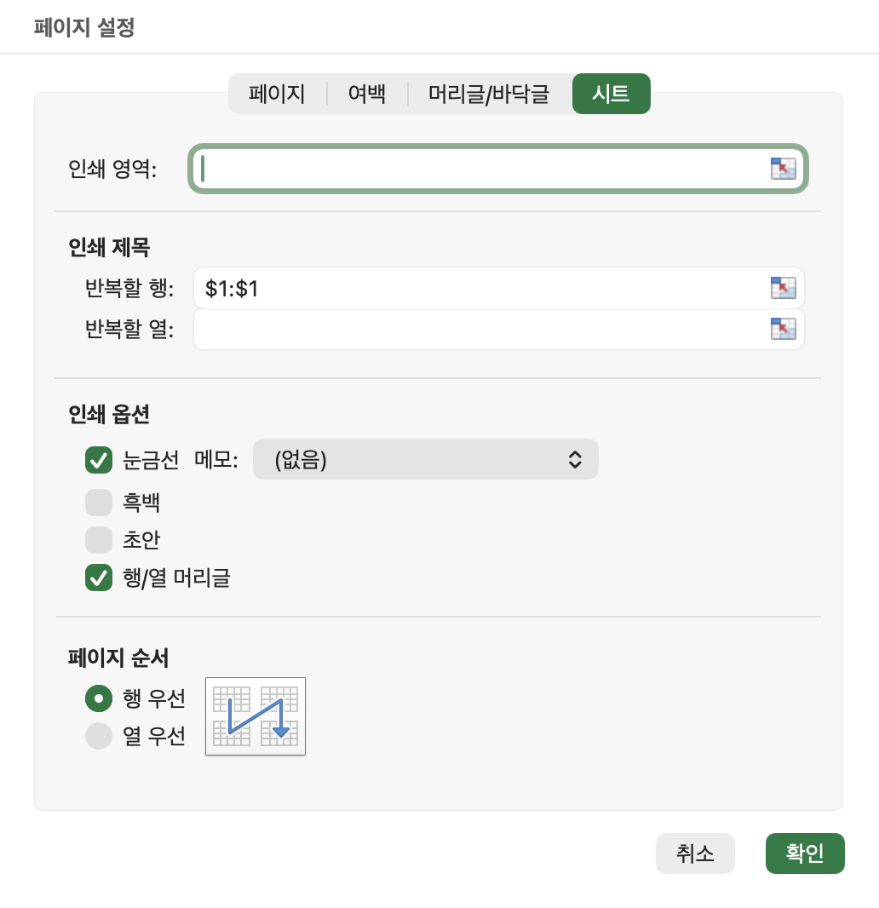
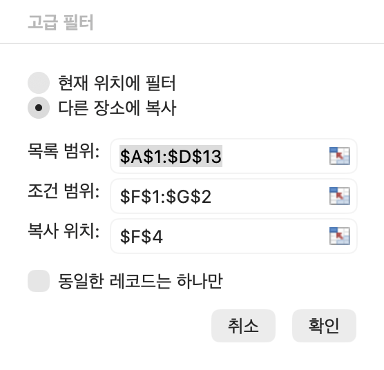

| 복습 순서 | 학습 내용 |
|---|---|
| 인쇄·필터 | 페이지 설정 · 조건표 |
| 조건 하나 | SUMIF · COUNTIF · AVERAGEIF |
| 조건 여러 개 | SUMIFS · COUNTIFS · AVERAGEIFS |
| 채우기 | 절대 참조 · 혼합 참조 |


$1:$3Ctrl+P에서 페이지별 제목과 번호 확인| 지역 | 달성 여부 |
|---|---|
| 서울 | 달성 |
| 부산 | 미달성 |

| 행 | A 지역 | B 달성 여부 | C 판매 금액 |
|---|---|---|---|
| 2 | 서울 | 달성 | 500,000 |
| 3 | 부산 | 미달성 | 300,000 |
| 4 | 서울 | 미달성 | 400,000 |
| 5 | 서울 | 달성 | 200,000 |
| ① 조건 범위 | ② 조건 | ③ 합계 범위 |
|---|---|---|
| A2:A5 | "서울" | C2:C5 |
| 서울인지 검사 | 서울인 행 선택 | 금액 더하기 |
=SUMIF(A2:A5,"서울",C2:C5) → 1,100,000| 함수 | 예시 수식 | 결과 |
|---|---|---|
| COUNTIF | =COUNTIF(A2:A5,"서울") | 3 |
| AVERAGEIF | =AVERAGEIF(A2:A5,"서울",C2:C5) | 366,666.67 |
| 결과 셀 | G열 지역 | 수식 |
|---|---|---|
| H2 | 서울 | =SUMIF($A$2:$A$5,G2,$C$2:$C$5) |
| H3 | 부산 | =SUMIF($A$2:$A$5,G3,$C$2:$C$5) |
F4 → $A$2:$A$5G2는 아래로 채우면 G3으로 변경| 함수 | 인수 순서 |
|---|---|
| SUMIF | 조건 범위 → 조건 → 합계 범위 |
| SUMIFS | 합계 범위 → 조건 범위1 → 조건1 → … |
| 행 | A 지역 | B 달성 여부 | C 판매 금액 |
|---|---|---|---|
| 2 | 서울 | 달성 | 500,000 |
| 3 | 부산 | 미달성 | 300,000 |
| 4 | 서울 | 미달성 | 400,000 |
| 5 | 서울 | 달성 | 200,000 |
| 인수 | 입력 예 |
|---|---|
| Sum_range | C2:C5 |
| Criteria_range1 | A2:A5 |
| Criteria1 | 서울 |
| Criteria_range2 | B2:B5 |
| Criteria2 | 달성 |
함수 결과 = 700,000
=SUMIFS(C2:C5,A2:A5,"서울",B2:B5,"달성")| 함수 | 인수 순서 |
|---|---|
| COUNTIFS | 조건 범위1, 조건1, 조건 범위2, 조건2 |
| AVERAGEIFS | 평균 범위, 조건 범위1, 조건1, … |
| 판매 금액 | 40만 원 이상 | 40만 원 미만 |
|---|---|---|
| 300,000 | ✓ | |
| 400,000 | ✓ | |
| 500,000 | ✓ |
">=400000" · 400,000 포함"<400000" · 400,000 제외| 참조 | 고정되는 곳 | 채우기 |
|---|---|---|
| $G4 | G열 | 오른쪽으로 가도 G열 |
| H$3 | 3행 | 아래로 가도 3행 |
| $A$2 | A열과 2행 | 열과 행 모두 고정 |
$G4 · 열 고정, 아래로 바뀜H$3 · 행 고정, 오른쪽으로 바뀜| 확인 항목 | 확인할 내용 |
|---|---|
| 조건 | 서울이고 달성인가? |
| 범위 | 같은 행을 선택했나? |
| 채우기 | 고정한 범위가 밀리지 않았나? |
| 비교 | >= 와 < 를 구별했나? |
10문제가 한 화면에 나옵니다. 위에서부터 고르고 맨 아래에서 채점하세요.
이름을 입력하면 시작합니다.
채점 결과는 선생님께 전달되어 복습 확인에 쓰입니다.
화면과 강사 음성을 함께 보거나 원하는 주제를 선택해 들을 수 있습니다.
강사 음성 합성으로 제작한 복습 음성입니다.